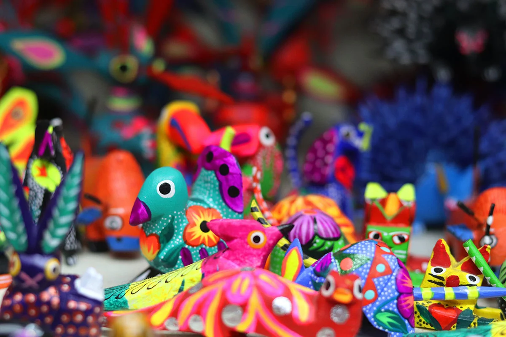
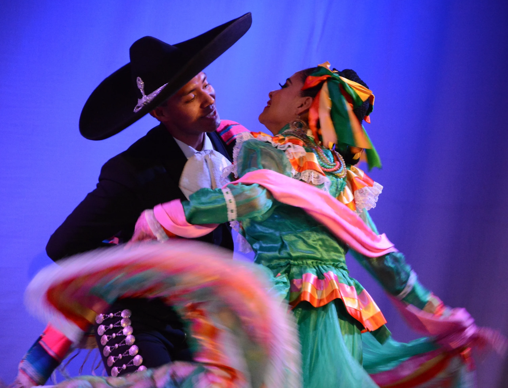

México es conocido por su rica cultura, que abarca desde las antiguas civilizaciones indígenas hasta la influencia de la época colonial española. La diversidad de tradiciones, arte, música y gastronomía hacen única a la cultura mexicana.
La artesanía mexicana es reconocida por sus colores vibrantes y técnicas tradicionales transmitidas de generación en generación.
El baile folklórico mexicano es una expresión artística que destaca la diversidad de las regiones del país y sus tradiciones.